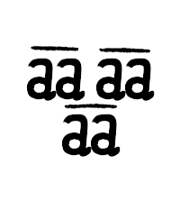
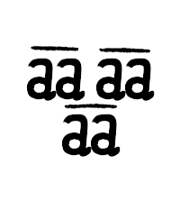
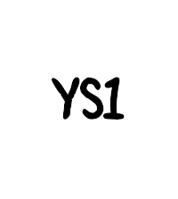
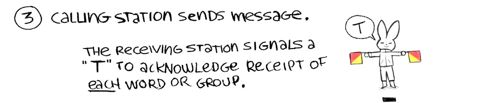
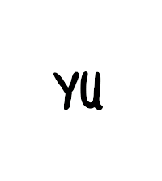
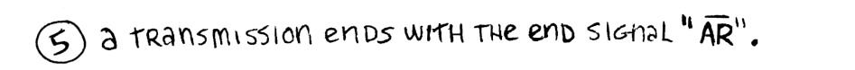

Morse Signaling by Hand Flags or Arms
![There are images of rabbits holding Oscar flags, and using them to signal morse code. For "dah" a rabbit holds two flags outward horizontally at arms length, for "dit" a rabbit holds two flags up over their head, to signal the separation of dits and dahs a rabbit crosses two flags downward in front of their body, to signal the separation of letters/groups/words the rabbit holds the two flag forward apart from each other, and the last signal consisting of a rabbit waving two flags about its head in circles is used to make a request for repetition(if by the receiving station) or to erase signals(if made by the transmitting station).](../media/content/2024_morse_handflags.jpg)
Allow for enough time between dots and dashes, and between letters, groups or words.
How to start/end:

1. Sender signals K1.
 

Or... signal "AA AA AA"(all groups have bars at the top). Run letters with top bars together.
AA AA AA is used when wishing to call a station within visual range without knowing their name. The call is repeated until the other station replies.
2. The receiving station signals "TTTT: to answer the call, and does not stop unless the transmitting station stops their call.
...or the receiver signals "YS1".


3. Calling station sends message. The receiving station signals a "T" to acknowledge receipt of each word or group.

4. If the calling station wants to send code groups, messages must be preceeded by "YU".

5. A transmission ends with the end signal "AR"(with a top bar over both characters).

"Oh! I'm going to repeat the signals," the rabbit says.
Zine
Download the zine version of this page.

How to fold a zine.